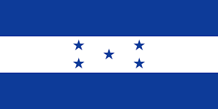

Tu Nombre Completo
About Me

My name is Margareth Ramos and I am a student at BYU-Idaho. I am passionate about learning new technologies and building dynamic web applications that are accessible and user-friendly.
La Ceiba , Atlantida

Did you know that Honduras shares the Mesoamerican Barrier Reef System, the second-largest coral reef in the world? The Bay Islands (Roatán, Utila, and Guanaja) are world-renowned for their crystal-clear waters and are a top destination for divers across the globe.